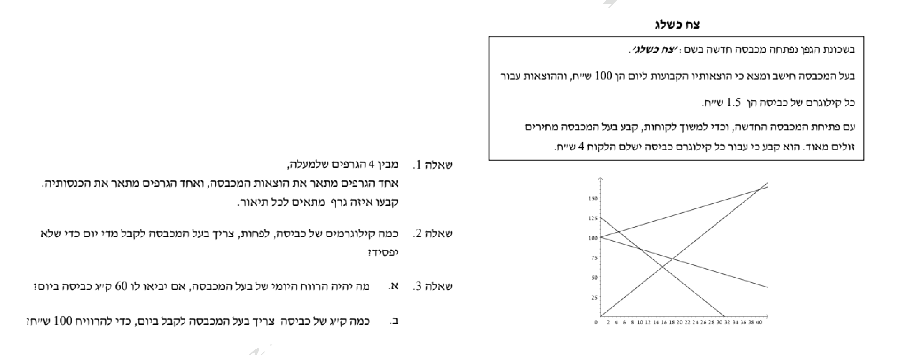

אלגברה לכיתה ח'
52
3
הגרף מתאר את הקשר בין גובה עצים לבין אורך הצל שלהם בשעה 11:00 בבוקר.
- א.מהו אורך הצל של עץ שגובהו 10 מטרים?מ'
- ב.מהי משוואת הישר המתאר את אורך הצל (y) כפונקציה של גובה העץ (x)?1.y = 1.5x2.y = 0.5x3.y = −0.5x4.y = −1.5x
צח כשלג
שאלת סיכום: התבוננו בנתונים ובגרף, וענו על השאלות שבסעיפים.
